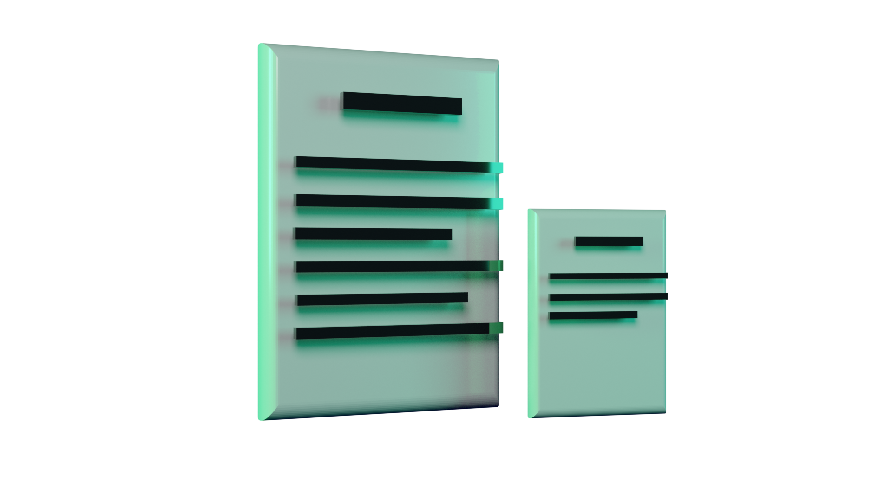
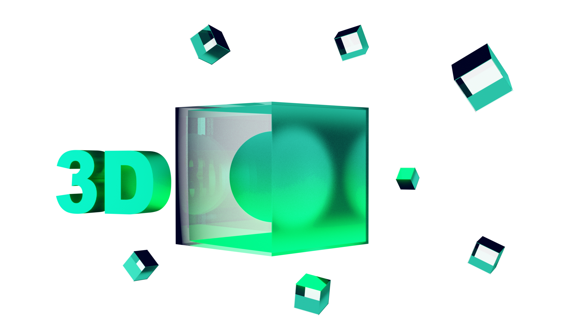

Diagramas
Composições e materiais de leitura como revistas, tabloides, livros e ebook's, precisam ser agradáveis aos olhos, para não poluir com tantas informações desnecessárias. A diagramação é essencial para trazer uma fluidez na leitura das idéias, e é essa fluidez que eu vou criar para o seu projeto. Clique aqui e saiba mais.
3D
Maquetes em 3D, ambientes virtuais vislumbrando o futuro metaverso e realidade aumentada para filtros em redes sociais, jogos e aplicativos educacionais. Saiba mais aqui.
Info
Infográficos, Infoprodutos, tudo isso requer uma atenção importante para poder passar a informação como você deseja, com credibilidade e visual marcante, e eu ofereço meus serviços para te ajudar a alcançar isso. Saiba mais clicando aqui.